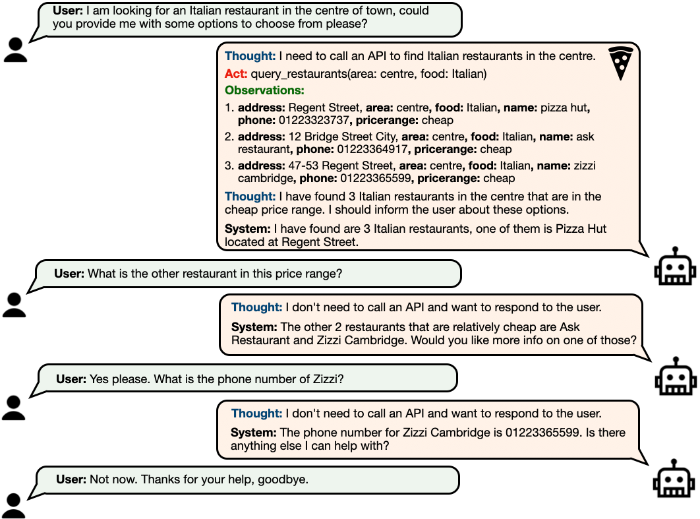
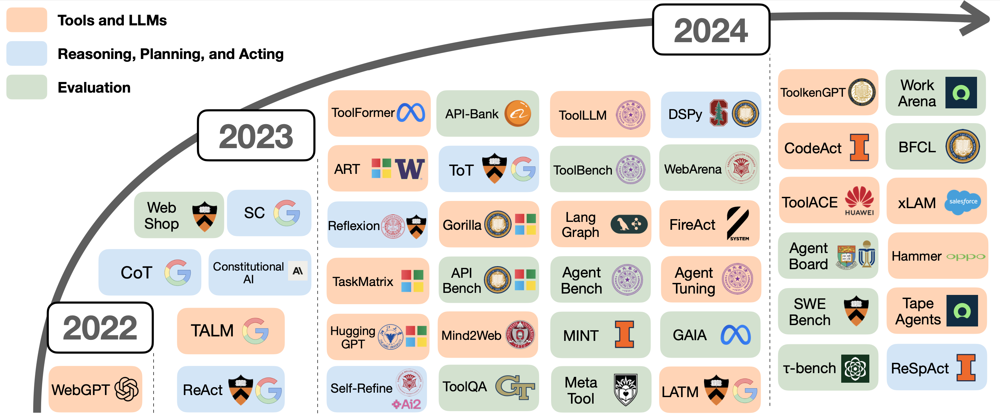
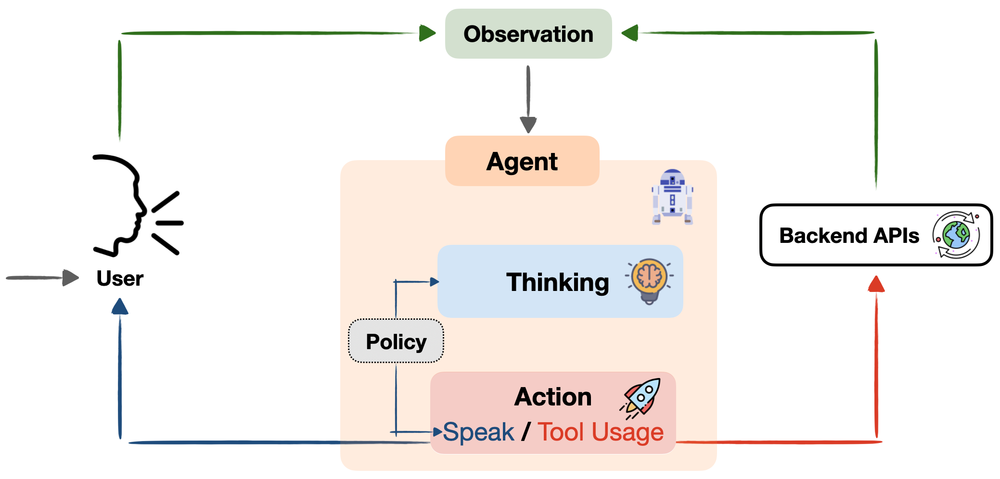
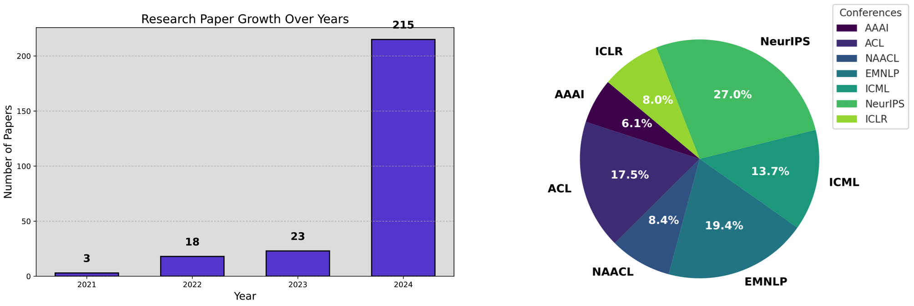

Large Language Models (LLMs) have brought significant advancements in Natural Language Processing, transforming our interactions with AI by enhancing understanding, reasoning, and task-solving. Traditionally, before generative LLMs, task-oriented dialogue (TOD) systems guided AI-based assistants to perform predefined tasks by following a structured flow. But with LLMs' ability to understand complex language, interpret instructions, and generate high-quality responses, we are moving towards a new breed of AI—Conversational AI Agents—that engage users in more dynamic, context-rich conversations. Our blog post scopes Conversational Agents in the era of Large Language Models; clarifies key terminology, explores current challenges, and discusses future directions in this domain, especially for conversational task completion agents.
Paradigm Shift in the Era of LLMs
The backbone of the LLM-based domain shift in language understanding and generation tasks started its first steps with the large-scale self-supervision trend, where LLMs are trained on vast datasets. Paired with advances in GPU technology, this approach has empowered LLMs to handle progressively larger models and datasets. However, LLMs are initially pre-trained to simply complete sentences, which limits their ability to follow complex human instructions. This led to instruction tuning, where models are fine-tuned specifically to understand and follow instructions. This process calibrates LLM responses with user preferences, like a cherry on top. Parallel to these parameter-update strategies, in-context learning emerged with GPT-3 (Brown et al, 2020), enabling LLMs to learn from a few examples provided within the prompt. Further methods like Chain-of-Thought (CoT) (Wei et al., 2022) prompting let LLMs to tackle complex queries by breaking them down into smaller subtasks for step-by-step reasoning.
Despite these, when interacting with users, LLMs remain fundamentally limited to their parametric knowledge during response generation, lacking emergent agent abilities like reasoning, planning, decision-making, and acting.
Conversational AI Agents
In this blog post, we explicitly want to motivate the emergent field of Conversational Agents, where an LLM-based agent is designed to perform multi-turn interactions with users, by integrating reasoning and planning capabilities with action execution.
We categorize recent developments in LLM Agents into three main areas: (i) tool usage, (ii) thinking, planning, and acting, and (iii) evaluation. Figure 2 presents an overview of LLM Agent advancements in these categories over the past few years.
Tools Usage. While LLMs are good at solving language tasks with their own reasoning, they struggle with real-time tasks that require performing actions like checking live weather or executing specific commands. Integrating tools like APIs can help LLMs perform these tasks by letting them call functions directly OpenAI Function Calling. Studies such as ToolFormer (Shick et al., 2023), Gorilla (Patil et al, 2023), and ToolLLM (Qin et al., 2023) have shown that enabling LLMs to use tools that improve their ability to complete tasks.
Reasoning, Planning, and Acting. Adding tools helps, but LLMs still need the skill to think through tasks and decide on when and how to call the right actions. ReAct (Yao et al., 2022) allows LLM agents to think and act by integrating thought with execution for effective outcomes. Proprietary models like GPT-4 are ahead in these agent skills, but methods like AgentTuning (Zeng et al., 2023) and FireAct (Chen et al., 2023) work on training open-source models for agent thinking and acting. On the other hand, agents sometimes follow planned steps to reach goals, from moving physically such as Helper-X (Sarch et al., 2024) and CodeAct (Wang et al., 2024) to online navigation like Webarena (Zhou et al., 2023), sharing progress with users for real-time feedback and smoother interactions.
Evaluation. Agent evaluation has evolved from checking basic commands (Tur et al., 2011) to more advanced tests, like tracking multi-turn dialogue (Rastogi et al., 2019) and completing complex tasks in real time (Hudecek et al., 2023). New benchmarks like AgentBench (Liu et al., 2023) and GAIA (Mialon et al., 2023) assess agents on tougher challenges, including maintaining consistency over multiple interactions and adapting to changing environments. Recent work, like $\tau$-bench (Yao et al., 2024) and TravelPlanner (Xie et al., 2024), push the frontier by measuring both interactive consistency and environmental adaptability in real-world scenarios.
Next-Generation Conversational Task-Completion Agents
Besides the general Agent domain, LLMs have reshaped dialogue systems by transitioning from rigid, modular architectures (Young et al., 2002) to adaptive, agent-based frameworks that can handle complex and multi-turn interactions with refined prompting and fine-tuning methods (Gupta et al., 2022). For Example, Figure 3 shows the new generation of dialogue structures powered by Conversational Agents, where a single Agent manages the entire process—handling user query reasoning, planning, tool calls (if needed), and response generation—replacing the separate modules found in traditional dialogue frameworks, such as in Steve Young’s well-known structure (Young et al., 2002). Rest, we will investigate the urgent required capabilities of Conversational Agents for better systems towards AGI.
Memory and Personalization. Effective Conversational Agents integrate short- and long-term memory (Huang et al., 2023) which enables them to create personalized interactions that recall user preferences. This integration fosters a natural connection, such as remembering a favorite coffee order or special days like a birthday, or Valentine's Day (Park et al., 2023).
Policy Alignment and Control. Traditional dialogue systems use structured, rule-based policies to ensure controlled responses. However, in modern LLM-based frameworks like LangGraph and DSPy, they provide emerging solutions for approximate policy control but remain limited in complex scenarios.
Interactivity. Recent advances, like ReSpAct (Vardhan et al., 2024), advocate for user-guided interactions to clarify and adapt agent behavior in real-time, addressing ambiguities and obstacles for more natural and controllable dialogues.
Multi-Agent Collaboration. Finally, multi-agent frameworks like AutoGen (Wu et al., 2023) allow specialized agents to collaborate, with a central "concierge" agent orchestrating tasks. This collaborative interaction between different agents can enhance accuracy and user experience in complex settings such as customer service.
Challenges and Future Directions
Conversational AI Agents have made remarkable progress but challenges remain. Ensuring controllability, managing context, and avoiding hallucinations (where the agent generates inaccurate responses or tryies to call the tools that do not exist) are interesting areas for improvement. Agents will also need personalized interactions, where memory-based systems track user preferences for more tailored responses, enhancing trust and user satisfaction. Finally, proper benchmarks focused on these agentic abilities are essential—serving as an "ImageNet" for Agents—to significantly accelerate research in Conversational Agents. Furthermore, it is crucial to streamline these benchmarks, as they currently require significant manual setup. Ideal Agent benchmarks should be engineered for easy deployment and allow researchers to set up and run evaluation environments within minutes.
The rising prominence of LLM-based agents has been evident in academic research in the last couple of years, with Figure 4 illustrating their accelerating presence across some popular conferences. Looking forward, this shift presents both exciting opportunities and important challenges. While significant progress has been made in agentic features like tool usage, memory, policy control, and collaboration, there remains much to explore in creating intelligent, adaptive, and reliable agents.
Citation
@article{acikgoz2024convagents,
title = "The Rise of Conversational AI Agents with Large Language Models",
author = "Emre Can Acikgoz and Dilek Hakkani-Tur and Gokhan Tur",
journal = "emrecanacikgoz.github.io",
year = "2024",
month = "November",
url = "https://emrecanacikgoz.github.io/Conversational-Agents/"
}
Useful Resources
References
[1] Brown et al. “Language Models are Few-Shot Learners.” NeurIPS 2020.
[2] Wei et al. “Chain of thought prompting elicits reasoning in large language models.” NeurIPS 2022
[3] Shick et al. “Toolformer: Language Models Can Teach Themselves to Use Tools.” NeurIPS 2024
[4] Patil et al. “Gorilla: Large Language Model Connected with Massive APIs.” NeurIPS 2024
[5] Qin et al. “ToolLLM: Facilitating Large Language Models to Master 16000+ Real-world APIs.” ICLR 2024
[6] Yao et al. “ReAct: Synergizing reasoning and acting in language models.” ICLR 2023.
[7] Zeng et al. “AgentTuning: Enabling Generalized Agent Abilities for LLMs.” arXiv preprint arXiv:2310.12823 (2023)
[8] Chen et al. “FireAct: Toward Language Agent Fine-tuning.” arXiv preprint arXiv:2310.05915 (2023)
[9] Sarch et al. “HELPER-X: A Unified Instructable Embodied Agent to Tackle Four Interactive Vision-Language Domains with Memory-Augmented Language Models.” ICLR 2024 Workshop LLMAgents
[10] Wang et al. “Executable Code Actions Elicit Better LLM Agents.” ICML 2024
[11] Zhou et al. “WebArena: A Realistic Web Environment for Building Autonomous Agents.” ICLR 2024
[12] Tur et al. “Spoken Language Understanding: Systems for Extracting Semantic Information from Speech.” IEEE 2011.
[13] Rastogi et al. “Towards Scalable Multi-domain Conversational Agents: The Schema-Guided Dialogue Dataset.” AAAI 2020
[14] Hudecek et al. “Are LLMs All You Need for Task-Oriented Dialogue?.” ACL 2023
[15] Liu et al. “AgentBench: Evaluating LLMs as Agents.” ICLR 2024
[16] Mialon et al. “GAIA: a benchmark for General AI Assistants.” ICLR 2024.
[17] Yao et al. “$\tau$-bench: A Benchmark for Tool-Agent-User Interaction in Real-World Domains.” arXiv preprint arXiv:2406.12045 (2024).
[18] Xie et al. “TravelPlanner: A Benchmark for Real-World Planning with Language Agents.” ICML 2024.
[19] Young et al. “Talking to machines (statistically speaking).” ICSLP 2002.
[20] Gupta et al. “InstructDial: Improving Zero and Few-shot Generalization in Dialogue through Instruction Tunings” ACL 2022.
[21] Huang et al. “Memory Sandbox: Transparent and Interactive Memory Management for Conversational Agents.” ACM Symposium on User Interface Software and Technology 2023.
[22] Park et al. “Generative Agents: Interactive Simulacra of Human Behavior.” arXiv preprint arXiv:2304.03442 (2023).
[23] Vardhan et al. “ReSpAct: Harmonizing Reasoning, Speaking, and Acting Towards Building Large Language Model-Based Conversational AI Agents.” arXiv preprint arXiv:2411.00927 (2024).
[24] Wu et al. “AutoGen: Enabling Next-Gen LLM Applications via Multi-Agent Conversation.” ICLR 2024 Workshop LLMAgents.